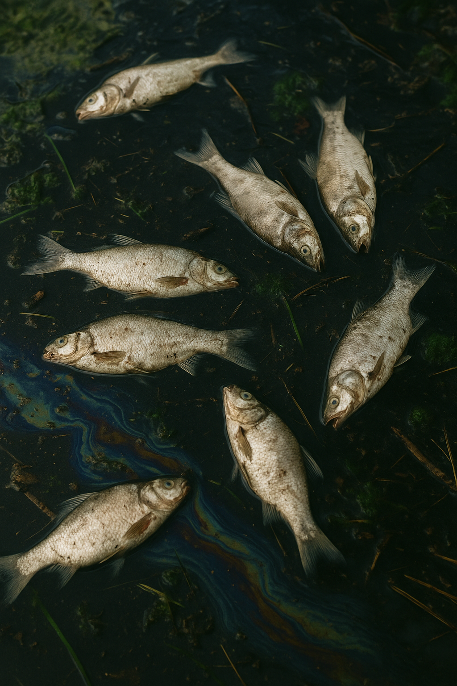
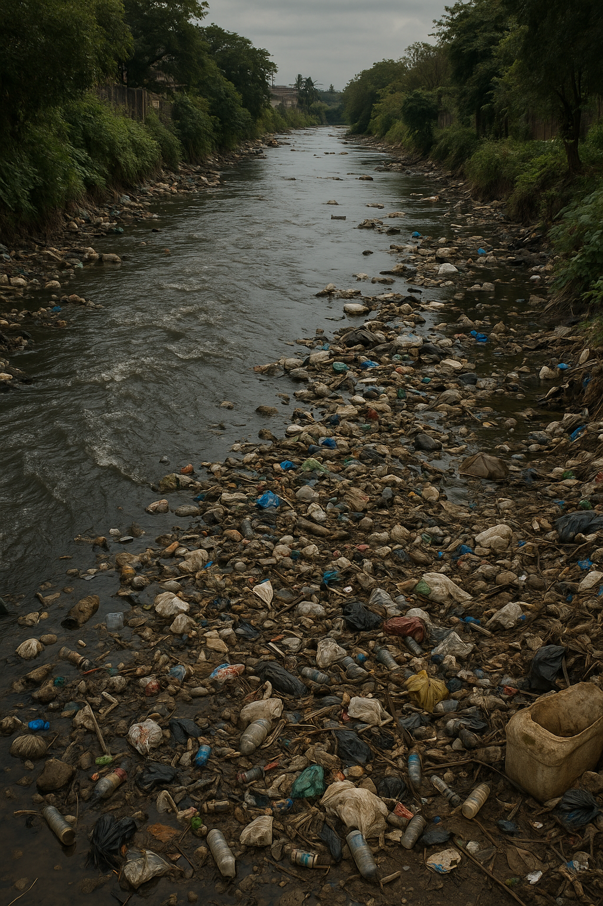
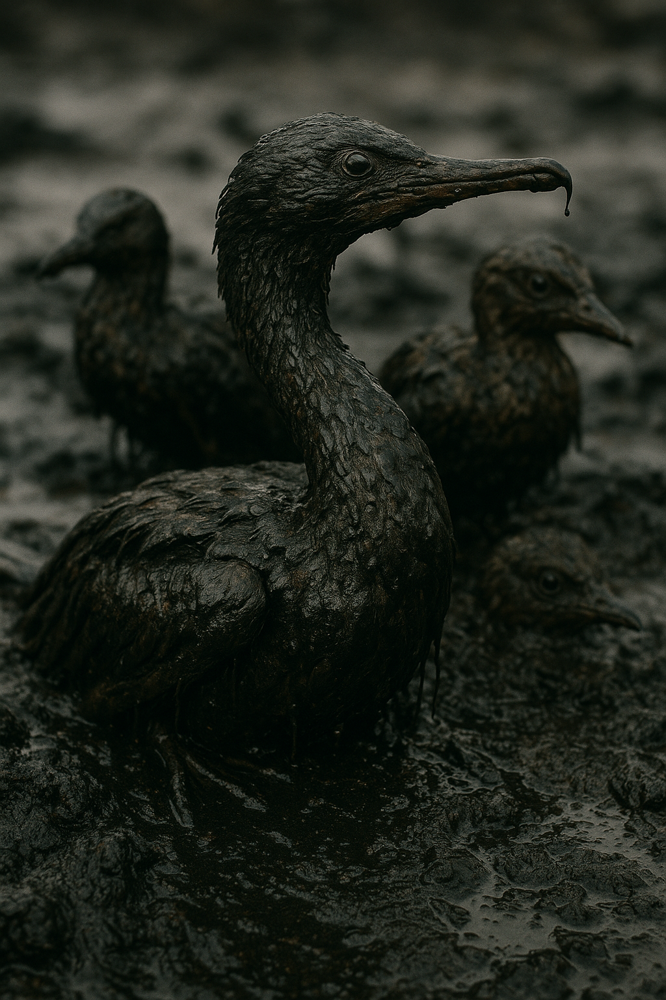
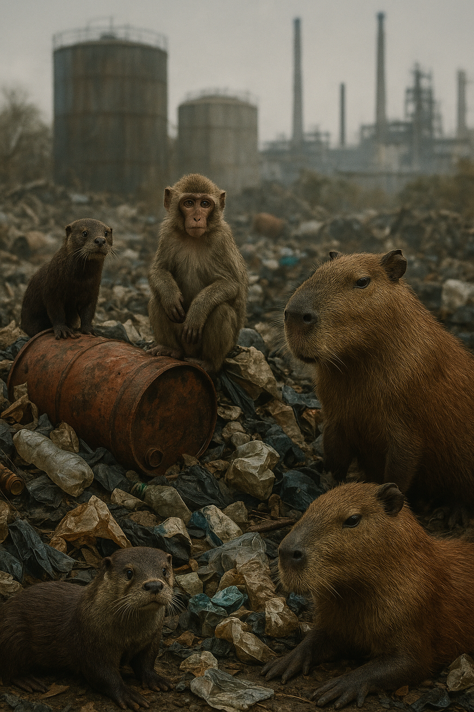
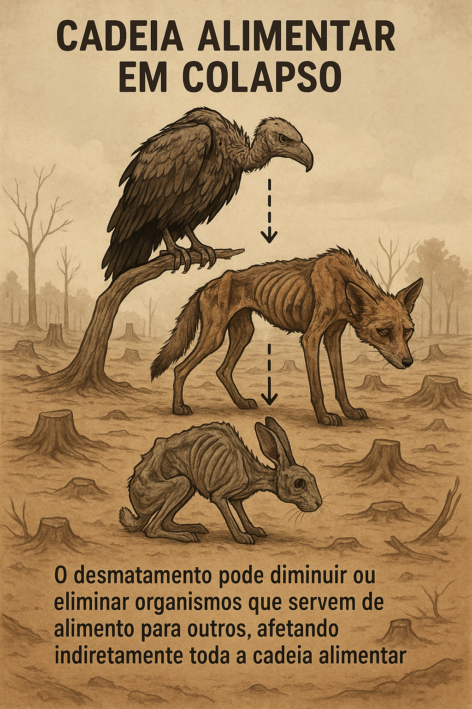

Fauna & Flora
O impacto das empresas no meio ambiente.
O desequilíbrio ambiental, causado pelo descarte inadequado de resíduos e pelo desmatamento, tem impactos profundos sobre os ecossistemas, sendo um dos mais graves o colapso da cadeia alimentar. A poluição do solo, da água e da vegetação afeta diretamente os organismos que sustentam as bases dessa cadeia, prejudicando a sobrevivência de diversas espécies e resultando em um ciclo de desnutrição, doenças e extinções.
Poluição em rios

A presença de peixes mortos flutuando em rios ou lagos é um sinal alarmante de contaminação hídrica. Esse tipo de ocorrência geralmente está ligado ao descarte inadequado de produtos químicos por indústrias, oficinas e outras atividades humanas. Substâncias tóxicas despejadas diretamente nos corpos d’água alteram o pH, reduzem o oxigênio dissolvido e intoxicam a fauna aquática.
Quando empresas descartam resíduos sem tratamento ou sem seguir as normas ambientais, os impactos são imediatos e devastadores. Espécies inteiras de peixes podem desaparecer de determinadas regiões, comprometendo o equilíbrio ecológico, a alimentação de comunidades ribeirinhas e até mesmo o abastecimento de água para consumo humano. Além disso, a decomposição dos animais mortos contribui para a degradação ainda maior da qualidade da água.
Poluição vegetal

A poluição é uma das maiores ameaças ao meio ambiente, e seus impactos na flora são profundos e devastadores. A contaminação do ar, da água e do solo afeta diretamente o crescimento e a sobrevivência das plantas, essenciais para a manutenção da vida no planeta. Gases tóxicos liberados pela indústria, queimadas e emissões de veículos prejudicam a fotossíntese, comprometendo a saúde das plantas e reduzindo a produção de oxigênio. Além disso, a poluição da água e do solo pode alterar a composição dos nutrientes, tornando-os inadequados para o desenvolvimento das espécies vegetais.
Esse desequilíbrio afeta toda a cadeia alimentar, pois as plantas são a base de muitos ecossistemas, sustentando uma infinidade de organismos. O desaparecimento de vegetação nativa, muitas vezes substituída por espécies invasoras adaptadas à poluição, altera drasticamente a biodiversidade, comprometendo a estabilidade dos ecossistemas e, por consequência, a qualidade de vida de todos os seres vivos.
Poluição marítima

A poluição do mar, causada principalmente pelo descarte inadequado de resíduos industriais, plásticos e esgoto, afeta gravemente a vida marinha. Espécies morrem intoxicadas, habitats são destruídos e a cadeia alimentar é comprometida. Além disso, o ser humano também sofre com a contaminação de peixes e frutos do mar consumidos.
Animais silvestres

A presença de animais silvestres como macacos, capivaras, lontras e outros em áreas contaminadas por lixo industrial é um sinal alarmante do desequilíbrio ecológico causado pela ação humana. Esses animais, expulsos de seus habitats naturais pela destruição ambiental, acabam invadindo locais poluídos em busca de alimento, abrigo ou água.
O contato direto com resíduos químicos e industriais pode causar intoxicações, doenças graves e até a morte desses animais. Além disso, essa convivência forçada com ambientes degradados afeta toda a cadeia alimentar, comprometendo a biodiversidade e revelando o impacto profundo do descarte incorreto de materiais químicos no meio ambiente. Preservar a fauna silvestre passa, necessariamente, por uma gestão responsável dos resíduos industriais.
Colapso da cadeia alimentar

O colapso da cadeia alimentar é uma das consequências mais graves do desequilíbrio ambiental, frequentemente causado pelo descarte incorreto de resíduos e pelo desmatamento. Em regiões afetadas pela poluição química e destruição de habitats naturais, observa-se um aumento significativo no número de animais visivelmente enfraquecidos, desnutridos e doentes. Esse cenário resulta diretamente da contaminação do solo, da água e da vegetação, que afeta os organismos que ocupam a base da cadeia alimentar, como insetos, plantas aquáticas e pequenos peixes.
Quando esses organismos essenciais desaparecem ou se tornam tóxicos devido à poluição, as espécies que dependem deles como fonte de alimento enfrentam sérias dificuldades. O impacto negativo se propaga ao longo de toda a cadeia trófica, afetando desde os herbívoros até os predadores no topo da pirâmide alimentar. A escassez de alimentos ou a presença de substâncias tóxicas nos organismos que servem de sustento para outras espécies desencadeia um desequilíbrio populacional. Esse efeito em cascata pode levar à extinção local de diversas espécies, com sérios impactos no ecossistema.
O desequilíbrio gerado por essa destruição não afeta apenas a biodiversidade, mas também compromete a resiliência dos ecossistemas e sua capacidade de sustentar a vida de maneira saudável. As alterações na cadeia alimentar podem reduzir a diversidade biológica, afetar a polinização, a decomposição de matéria orgânica e, em última análise, prejudicar a capacidade dos ecossistemas de fornecer serviços vitais, como a purificação da água e do ar, a regulação climática e a proteção contra desastres naturais.